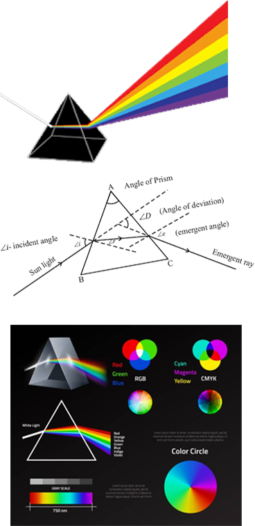

A prism, typically made of glass or another transparent material, serves as a fundamental
optical instrument that beautifully demonstrates the phenomena of refraction and dispersion. When a single
ray of light enters a prism, it is refracted, or bent, at the interface between air and the glass material.
This bending occurs because light travels at different speeds in different media – slower in denser
materials like glass than in air. The degree of bending depends on the light's wavelength, which is why a
prism can split a
single ray of white light into its constituent colors, a process known as dispersion. Each
color, from violet to red, bends at a slightly different angle due to its unique wavelength, spreading out
to form a spectrum.
The distinction between refraction and
reflection is pivotal in understanding how prisms
work. While refraction involves the bending of light as it passes through a medium, leading to dispersion,
reflection is the process by which light bounces off a surface. Prisms utilize refraction to reveal the
spectrum hidden within white light, unlike mirrors, which reflect light without dispersing it. The precise
angles and the quality of the glass material are crucial in determining the effectiveness of a prism in
dispersing light High-quality optical glass with minimal imperfections is preferred to ensure that light is
accurately refracted and that the spectrum is clear and vibrant.
In science, prisms have played a
crucial role in studying light and its properties. By
dispersing light into its component colors, prisms have enabled scientists to analyze the composition of
light sources, leading to significant discoveries in physics and astronomy. For example, by examining the
spectral lines in the light from stars and galaxies, astronomers can determine their chemical composition,
temperature, and movement. This analysis, known as spectroscopy, has become an indispensable tool in modern
astrophysics. Additionally, prisms have applications in various
optical devices including cameras,
binoculars, and lasers, showcasing their versatility and the enduring importance of understanding
light's fundamental behaviors. Through the simple yet profound mechanics of a prism, the complex nature of
light is unveiled, bridging the gap between observable phenomena and the intricate laws of physics that
govern our universe.
P
R
I
S
M
